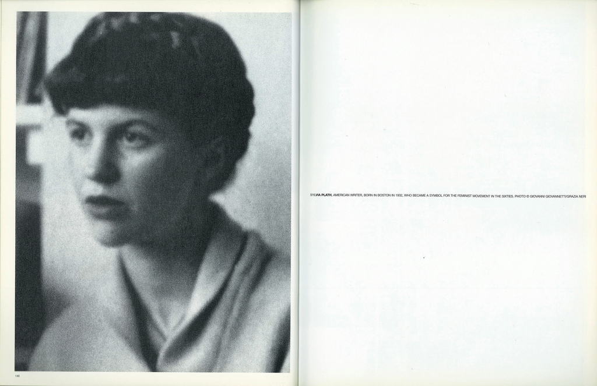

Sylvia Plath foi uma escritora nascida em 1932 em Boston, Massachusetts, nos Estados Unidos. A autora é conhecida por suas contribuições poéticas pertencentes ao gênero da poesia confessional e também pelo seu único romance A Redoma de Vidro (1963).
Silvia Plath nasceu em uma família de classe média e teve uma trajetória próspera como estudante, o que fez com que ganhasse uma bolsa de pós-graduação em literatura na Universidade de Cambridge, na Inglaterra. Foi por ali que conheceu Ted Hughes, também poeta, com quem se casou e teve dois filhos.
Além de mãe e esposa, Plath foi uma escritora que tinha seu diário como confidente. Era ali que desabafava sobre seu histórico depressivo (apesar de a doença não ser tão compreendida como hoje) e a tristeza que sentia.
Parte de suas sensações foram transferidas para a jovem Esther Greenwood, personagem de seu romance semi-autobiográfico A Redoma de Vidro, obra em que detalha sua relação com a depressão, doença com a qual lutou durante a vida até seu trágico fim, no ano de 1963.